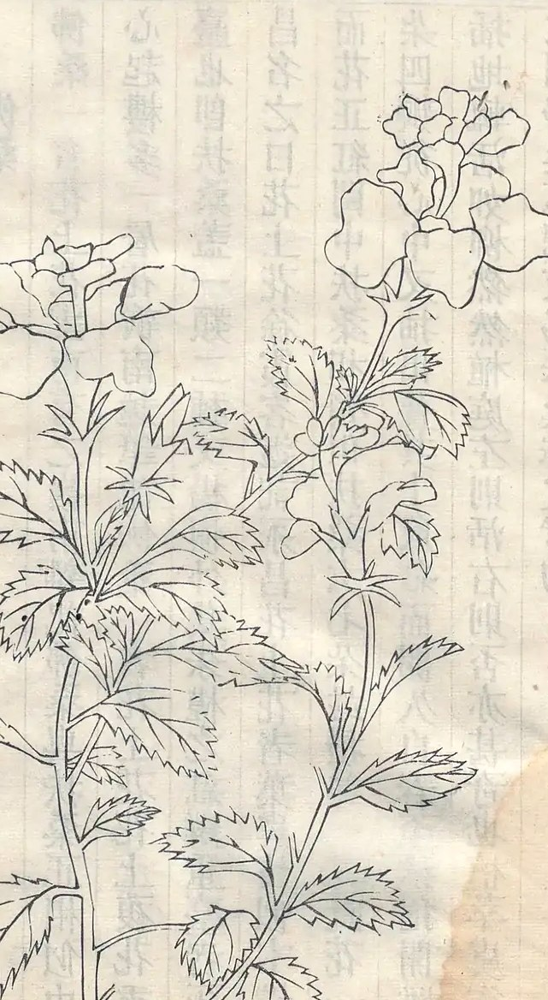

出处
- 书名
- 植物名实图考
- 作者
- 清 · 吴其濬
- 卷次
- 据影印本
锦葵科 木槿属
Hibiscus rosa-sinensis
清·吴其濬《植物名实图考》 · 影印本

山野实拍
该种的现代实拍正在收录中，先以图谱存目。
本条《植物名实图考》原文正在录文整理，暂据《中国植物志》与现代记载说明；白话见右栏。
繁体照录，异体字保留原样。
佛桑即朱槿，花大，五瓣，有红、粉等色，花心抽出长柱；滇南村寨多栽在屋前。
原文逐句译出，供对照阅读。
图考名与今名并非一对一；未完成比对者标“待考订”。
| 海拔带 | 盛花期 |
|---|---|
| 200–800 m | 全年，3–11 月最盛 |
| 800–1 200 m | 4 月–10 月 |
海拔每升高一段，花期相应推迟；出行以当年物候为准。
看花之后，把它变成一次出行。